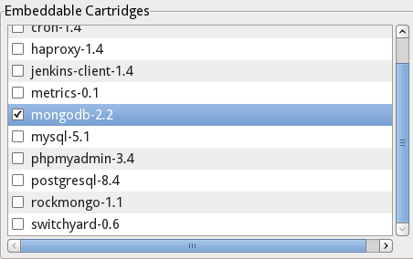
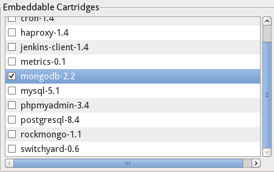

Support for MongoDB 2.2

Support multiple servers
Server logs

Server Adapter wizard
Port forwarding
SSH Keys
Support for MongoDB 2.2 |
|
| Support for MongoDB 2.2 |
The OpenShift platform was
upgraded to use MongoDB 2.2. For this release of the associated
tooling, MongoDB 2.2 is now fully supported.
 |
Support multiple servers |
|
| Key in Properties View | In Beta2 we allowed every
OpenShift connection to use its very own server. This allows you to
work with openshift.redhat.com, a liveCD or your very own OpenShift
origin instance in parallel. With this change we started using the
server when storing the connections. We therefore enhanced the
properties view to now show the key that is used for the particular
connection. The key shown is what's used when we store the
connection to the Eclipse preferences.
|
Server logs |
|
| Tweakable "Tail files..." | Early November OpenShift changed
the location of the application log-files. Users of JBoss Tools for
OpenShift could therefore not list application logs from Eclipse any
more. We fixed this and enhanced our "Tail files" action. It will
present you a dialog that presents you the command that's used to
list your logs. You will then be able to tweak it or simply confirm
it.
|
Server Adapter wizard |
|
| Easy publishing for any OpenShift project | In JBoss Tools for OpenShift you can create an Eclipse WTP server adapter for easy publishing to OpenShift. In prior versions the server adapter wizard did not allow you to create a server adapter for your workspace projects if they had the OpenShift git repo stored to a remote name that was not "origin". CR1 now fixes this. You'll now be able to create a server adapter for any project whose git repository points to OpenShift by some remote. |
Port forwarding |
|
| Is your application stopped? |
When attempting to retrieve
information on the ports used by an OpenShift application, the
PortForwarding dialog could return an empty list without providing
an explanation, leading to user confusion. The OpenShift
PortForwarding dialog has now been updated to inform a user that the
application may not be runinng if no port is retrieved from server.
|
SSH Keys |
|
| No erroneous warning about id_rsa |
When adding SSH public keys to
OpenShift, they are verified to ensure the matching private key is
listed in Eclipse SSH preferences. Previously when performing this
task on a Windows operating system, a user would be warned in error
when adding default rsa or dsa keys (id_dsa, id_rsa). This has been
corrected and no false alerts are generated or displayed.
|